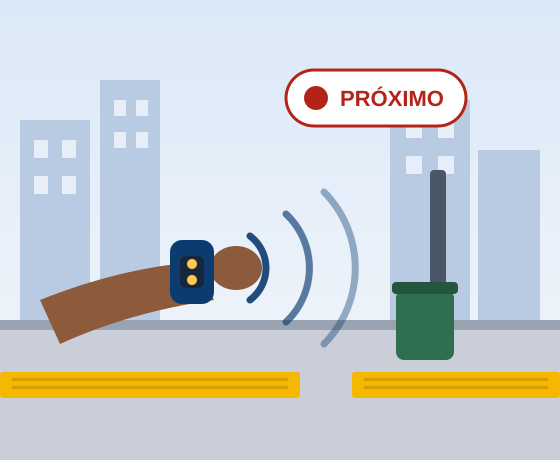
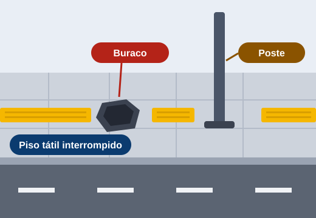

29.490
reclamações sobre calçadas no Portal 1746, em todo o município do Rio, entre jul/2023 e jul/2025.
Fonte: Câmara Municipal do Rio, audiência pública de 04/09/2025.
CitizenTech · Madureira, Rio de Janeiro
O SenseWay RJ une uma pulseira que avisa quando há algo à frente e um canal comunitário para registrar barreiras nas calçadas. Feito para pessoas com deficiência visual que circulam entre a estação, o Mercadão e o comércio de Madureira.

01 · O problema
Buracos, piso tátil interrompido, obras e objetos fixos no caminho são barreiras documentadas no Rio. Para quem não enxerga, cada uma delas pode significar uma queda ou um desvio perigoso.
29.490
reclamações sobre calçadas no Portal 1746, em todo o município do Rio, entre jul/2023 e jul/2025.
Fonte: Câmara Municipal do Rio, audiência pública de 04/09/2025.
Piso tátil
com falhas e interrupções na Estação Madureira, além de problemas em elevador e escada rolante.
Fonte: fiscalização do PROCON-RJ / SEDCON, 13/05/2026.
2025
Madureira aparece entre os bairros com reclamações sobre calçadas.
Fonte: Mobilize Brasil.
O número de 29.490 é da cidade inteira, não só de Madureira. Os dados acima vêm de fontes públicas e não foram produzidos pela equipe.

Pessoas com deficiência visual que precisam se deslocar entre transporte, comércio e serviços no entorno da Estação Madureira e da Avenida Ministro Edgard Romero.
02 · Como funciona
A pulseira usa um sensor ultrassônico: ele emite um som que não ouvimos e mede quanto tempo o eco leva para voltar. Um microcontrolador transforma essa medida em um aviso, sem precisar de internet.
O sensor HC-SR04 mede a distância do objeto à frente 10 vezes por segundo.
O microcontrolador descarta leituras inválidas, suaviza os dados e escolhe o estado.
Som e luz mudam de ritmo conforme a distância. No produto físico, vibração.
03 · Simulador
Arraste o controle ou digite uma distância. A página usa exatamente as mesmas regras do protótipo no Wokwi e do programa em Python.
O controle vai de 0 a 450 cm para que você também veja o estado FALHA (abaixo de 2 cm ou acima de 400 cm).
Valores que não são números também viram FALHA.
Atalhos
LIVRE
200 cm
Sem objeto no alcance do sensor. Isso não garante que o caminho é seguro.
Som: desligado
04 · Comunidade
Cada relato torna visível um problema que precisa ser corrigido. Não pedimos nome, CPF nem telefone.
Demonstração: os registros abaixo são simulados e não verificados. Ficam só nesta página e somem ao recarregar. Não são denúncias oficiais nem um mapa real de obstáculos.
Piso tátil danificado
Saída da Estação Madureira, lado da Av. Ministro Edgard Romero
Piso tátil interrompido perto da escada de acesso.
Relato simulado · não verificado
Obstáculo fixo
Calçada em frente ao Mercadão de Madureira
Poste e banca ocupando quase toda a largura da calçada.
Relato simulado · não verificado
Obra ou interdição
Rua Carolina Machado, próximo à passarela
Tapume sem sinalização sonora bloqueando a passagem.
Relato simulado · não verificado